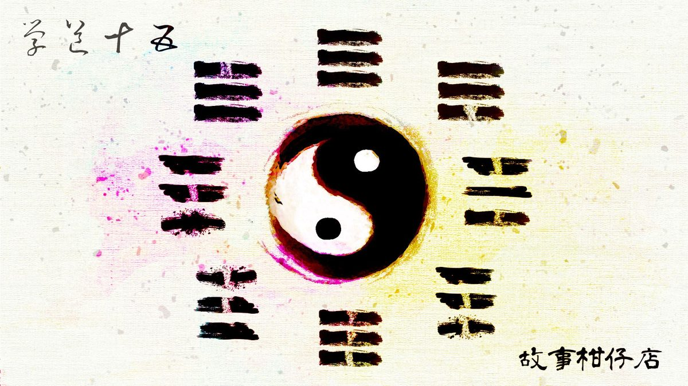

玄墨行者．學道（十五）：天地八方

內堂案上，擺著一個漆黑檀木的水盂，裡頭盛裝的液體同樣漆黑。旁邊擺著一根箭竹削成的細棍，前端鑲著釘梳。
玄墨七者全數朝壁畫跪了下去，天樞捧起水盂，凜聲稟報：
「祖師在上，三弟子玄天璣徒弟拾兒獲准入門，即刻進行入門禮，禮畢之時，拾兒正式成為我玄墨一族的傳人。」
他從懷中掏出如指甲片大小，卻滿室生香的蠟狀物質，放進水盂，說：「此物提煉自千年鯤精，乃頂級的驅魔香，是我大弟子玄天樞贈與新傳人的薄禮。」
接著，他捧著水盂依序來到眾師弟面前，所有人早已準備好禮物，紛紛投了進去。
老二天璇取一小塊灰白鈣質，說：「這是從一角幻獸頭上的角削來的，可避凶。」
老四天權將一片斑紋點點的薄片吹進水盂，道：「鬼蝶翅翼，助你身輕如燕，眼觀八方。」
老五玉衡搓進一抹粉末，說：「贔屭神獸甲殼磨成的粉，希望你能負重任、沉大氣。」
老六開陽笑嘻嘻道：「準備很久啦，終於派上用場。」拈出一小撮細毛，「這是仙狗尾巴上的毛，至於有什麼用途……我還不清楚。」
老七瑤光取一小瓶滴入數滴汁液，「妖蛇毒血最神，通筋脈、貫血路！你會感謝我的！」
最後水盂來到老三天璣面前，他狠狠咬破食指，鮮血點滴入盂。
「從今往後，拾兒便是我玄天璣正式傳人。為師承諾，所有一切都傳承予你。」
拾兒朝七者行了禮，跪在天樞面前，衣襟拉開，露出左半邊肌肉隆隆的膀子。
天樞拿起細竹棍，往水盂裡蘸兩下，釘梳扎進拾兒左頸，墨色沈進皮膚。
「還行？」
脖頸皮薄肉稀，每一針扎都像鑽進血管肌理，痛得十分劇烈。拾兒逞強，漲紅著臉點點頭。天樞又拾起針具，一排一排定針、入墨，將所有人的祝福及心眼，全數刺進拾兒點點滲血的左頸。
那汗，不只拾兒，還有天樞。原來天樞那樣眉目疏朗、身形清瘦之人，也能這般流汗。這活兒不容易，一體之力，全匯聚在針尖，用肌肉，用筋絡，用呼吸，用眼，用神，細細密密，用他的腕他的指，將命運一點一點刺進這血脈跳動，生氣勃勃的少年之頸。
雖累，但天樞還算珍惜。這是難得的勞動，畢竟上一次，是為了三年前的大曲。
「成了。」天樞放下針具，鬍髭底冒著汗，他拇指蘸墨，往拾兒眉心重重一捺，「開！」
綿密刺痛停了下來，拾兒鬆懈了臂膀，抬頭一看卻驚見七者左頸上全出現不曾看過的圖樣，很類似他剛刺上的坎卦卻不盡相同，再仔細一瞧，師父天璣的圖案倒是與他一模一樣。
原來玄墨七者脖子上的刺青，按排行是八卦名「乾、坤、坎、離、震、巽、艮」，卦名對應的則是「天、地、水、火、雷、風、山」。
「拾兒，入門禮後，代表你開始能夠觀三界，通天地，所以你才看得見我們的紋徽。不過，替天行道之事，並非只有玄墨獨佔，往後若遇見同道中人，他們也可能看得見你的紋徽。」天璣解釋道。
傷口仍痛著，點點滲出的血珠扎得拾兒癢癢的，不知怎麼的，鼻子也癢癢的，打不出噴嚏，反倒眼眶熱熱的。
他跪伏下去，深深叩頭，喊：「玄墨傳人拾兒拜見師父！」
鼻頭貼地的當下，拾兒突然又冒了問號，倏地抬起頭：「不對呀，七者只有七人，那最後一卦在誰身上？」
玉衡首先摀著嘴笑了出來，說：「你反應也太慢了些。」
「我太興奮了嘛！」拾兒一臉懵懂望向開陽及瑤光，期待兩位師叔給他答案，沒想到大夥卻你看我、我看你，憋著話不回答。
瑤光指了指廂房，搖搖頭，食指放在唇上，拾兒還沒反應過來，廂房內已傳來蒙叟摧枯拉朽的聲音：
「小子，入了門連我都給忘啦？有了我，咱們這玄墨一門才算是天地八方呀！」
－－－－－
#新連載依舊兩天一篇每晚準時六點半喔
#請人客多多指教
#記得去各大書店買我們的書故事柑仔店哩

